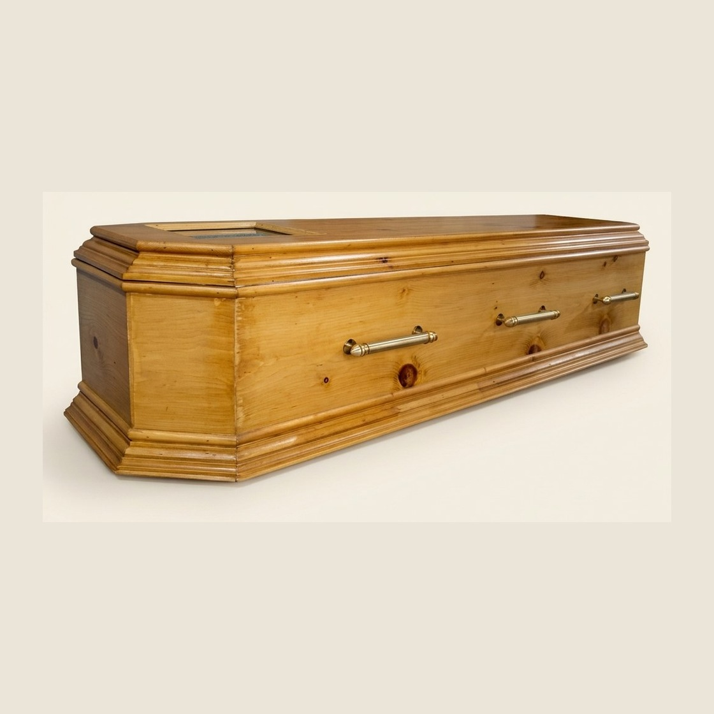

Coffin boxesکوفن باکس
Handmade taboot and funeral boxes ready in Lalkurti.لالکورٹی میں ہاتھ سے تیار تابوت اور فنرل باکس تیار۔
Lalkurti · Rawalpindi · Since 1988 لالکورٹی · راولپنڈی · ۱۹۸۸ سے
Coffin boxes, funeral services, body transit, and cremation in Rawalpindi.
Trusted by families across Pakistan and callers from the USA and abroad.
راولپنڈی میں کوفن باکس، جنازہ خدمات، باڈی ٹرانزٹ، اور کریمیشن۔
پورے پاکستان اور امریکہ سمیت بیرون ملک سے رابطہ کرنے والے خاندانوں کا اعتماد۔

Handmade taboot and funeral boxes ready in Lalkurti.لالکورٹی میں ہاتھ سے تیار تابوت اور فنرل باکس تیار۔
Guidance for families arranging a funeral under pressure.دباؤ میں جنازہ کا بندوبست کرنے والے خاندانوں کی رہنمائی۔
City-to-city transit and repatriation-style boxes.شہر بہ شہر ٹرانزٹ اور ریپٹری ایشن طرز کے باکس۔
Cremation support arranged with clear timing and rates.کریمیشن سپورٹ واضح وقت اور ریٹ کے ساتھ۔
What we provideہم کیا فراہم کرتے ہیں
Coffin boxes, funeral coordination, body transit, and cremation — arranged from Lalkurti for families in Pakistan and relatives calling from abroad. کوفن باکس، جنازہ کوآرڈینیشن، باڈی ٹرانزٹ، اور کریمیشن — لالکورٹی سے پاکستان کے خاندانوں اور بیرون ملک سے رابطہ کرنے والے رشتہ داروں کے لیے۔
Taboot and funeral boxes built by hand — viewing styles, lined interiors, and transit-ready builds.تابوت اور فنرل باکس ہاتھ سے تیار — ویونگ طرز، استر والے اندرون، اور ٹرانزٹ کے لیے مضبوط باکس۔
Help coordinating what the family needs for the funeral — timing, local handoff, and clear answers on WhatsApp or phone.جنازہ کے لیے درکار بندوبست میں مدد — وقت، مقامی حوالگی، اور واٹس ایپ یا فون پر واضح جواب۔
City-to-city transit in Pakistan, plus transit or repatriation-style boxes for overseas families.پاکستان میں شہر بہ شہر ٹرانزٹ، اور بیرون ملک خاندانوں کے لیے ٹرانزٹ یا ریپٹری ایشن باکس۔
Cremation arrangements with straightforward rates and timing. Tell us the city and schedule when you call or WhatsApp.کریمیشن کا بندوبست سیدھے ریٹ اور وقت کے ساتھ۔ کال یا واٹس ایپ پر شہر اور شیڈول بتائیں۔
Featured coffin boxesمنتخب کوفن باکس
Open any funeral box to see all photos, then ask Javed Gill for the rate on WhatsApp. کوئی بھی فنرل باکس کھولیں، تمام تصاویر دیکھیں، پھر جاوید گل سے واٹس ایپ پر ریٹ پوچھیں۔
How to beginشروع کیسے کریں
WhatsApp 0317 5404197 (+92 317 5404197) or call 0342 5277953 (+92 342 5277953). Say if you need a coffin, funeral help, body transit, or cremation. واٹس ایپ 0317 5404197 (+92 317 5404197) یا کال 0342 5277953 (+92 342 5277953)۔ بتائیں کوفن، جنازہ مدد، باڈی ٹرانزٹ، یا کریمیشن چاہیے۔
Share the city, who will receive the box or meet the transit, and any size or timing you already know. شہر، باکس وصول کرنے والا یا ٹرانزٹ سے ملنے والا، اور معلوم سائز یا وقت بتائیں۔
We confirm the service, the rate, and timing for the coffin, funeral support, transit, or cremation. ہم خدمت، ریٹ، اور کوفن، جنازہ سپورٹ، ٹرانزٹ، یا کریمیشن کا وقت تصدیق کرتے ہیں۔
Calling from outside Pakistanبیرون ملک سے رابطہ
If you are in the United States or another country, WhatsApp +92 317 5404197 with the Pakistan city, a local contact, and whether you need a coffin, funeral help, body transit, or cremation. We confirm the rate and plan while you stay abroad. اگر آپ امریکہ یا دوسرے ملک میں ہیں تو واٹس ایپ +92 317 5404197 پر پاکستان کا شہر، مقامی رابطہ، اور بتائیں کوفن، جنازہ مدد، باڈی ٹرانزٹ، یا کریمیشن چاہیے۔ آپ باہر رہیں؛ ہم ریٹ اور منصوبہ تصدیق کرتے ہیں۔
Testimonialsتاثرات
Exploreمزید دیکھیں
Coffin delivery and body transit from Lalkurti across Pakistan and for abroad orders.لالکورٹی سے کوفن ڈیلیوری اور باڈی ٹرانزٹ پورے پاکستان اور بیرون ملک آرڈر پر۔
Javed Gill and Javed Traders — funeral services from Lalkurti since 1988.جاوید گل اور جاوید ٹریڈرز — لالکورٹی سے ۱۹۸۸ سے جنازہ خدمات۔
WhatsApp 0317 5404197 or call 0342 5277953 for coffins, funeral help, transit, or cremation.کوفن، جنازہ مدد، ٹرانزٹ، یا کریمیشن کے لیے واٹس ایپ 0317 5404197 یا کال 0342 5277953۔